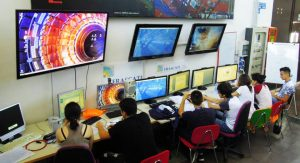
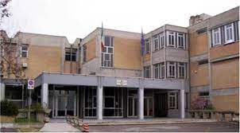
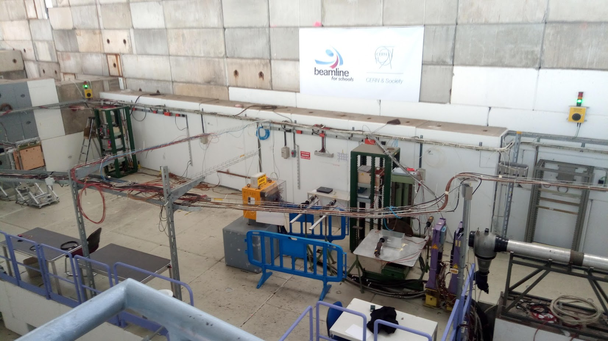
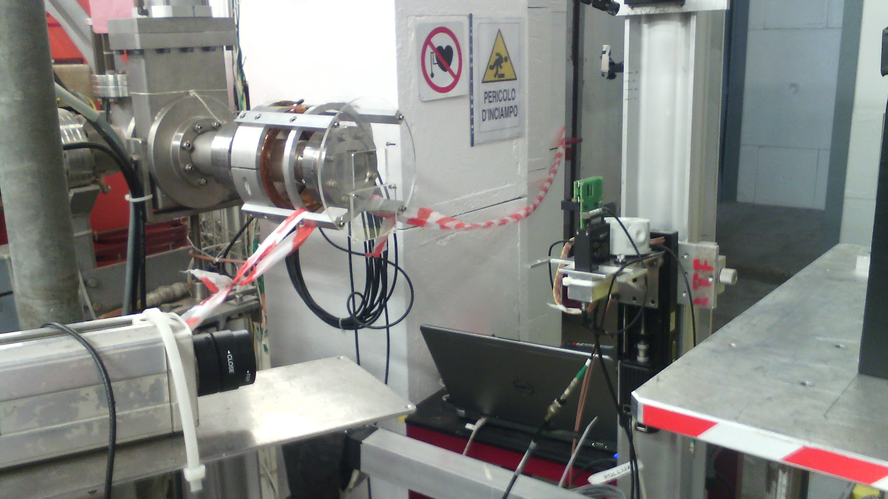
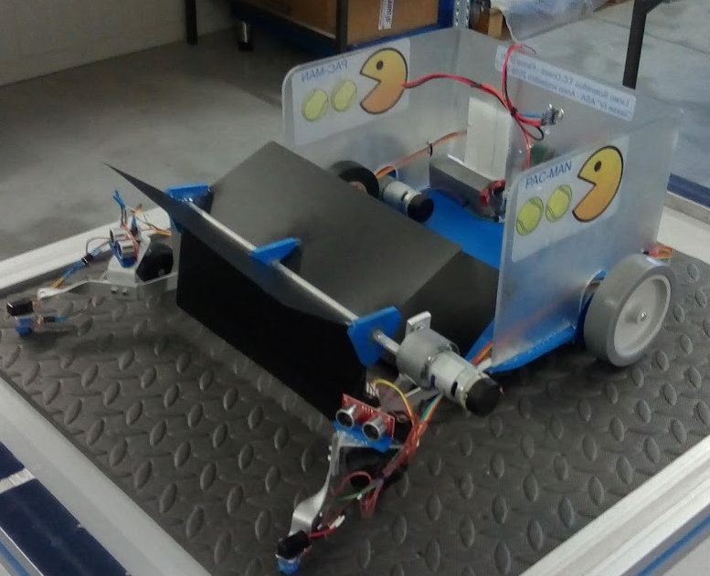
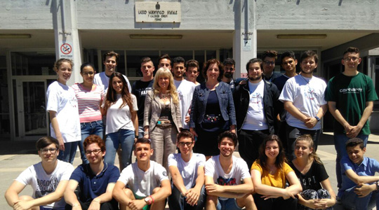

| home address | via Colle da Sole, 37, Torre San Patrizio, FM, Italy |
| residence | via Cesare Studiati, 11, Pisa, PI, Italy |
| phone number | +39 324 550 9174 |
| luca.ciucci99@gmail.com, luca@scanny3d.com, luca@lucaciucci99.com | |
| Website | lucaciucci99.com |
| GitHub | LucaCiucci |
| Luca Ciucci | |
| LucaCiucci99 |
C++ (& C): advanced practical experience, I use CMake and Visual Studio as build systemsRust: a very welcome recent adoption in my toolset, still learning but already developing real-life algorithms and a new GUI libraryMatlab: used matlab since prior to my university studies, especially for data analysis and visualizationTypeScript & JavaScript: for both frond-end and back-endHTML& CSSPython: data analysisTypstLaTexJavaPascalPIC Basic| 17/9/2018 - now |
University of Pisa Stared my studies in physics course L-30 |
| 17/7/2017 - 21/7/2017 |
Ducati Fisica in moto summer school Attended some lesson on mechanics, physics laboratory, motorbikes mechanical development, production, data analysis and cooperative problem solving. |
| 26/6/2017 - 1/7/2017 |
Modern Physics summer school for students Attended some physics courses with particular emphases on both classical and modern physics introduction. Laboratory experiences on measurements and computing. |
| xx/3/2017 |
IPPOG International masterclass 2017  Attended some courses on high energy particle accelerator physics at the LNF INFN laboratories. Particularly interested on accelerating technologies and tracing detectors. |
| 4/6/2018 |
Cambridge English First Certificate English level b2. |
| 2013 / 2018 |
Scientific high school diploma  Applied science section, 100/100 score. |
| 6/6/2023 |
"Learning by doing" competition winners We created Body Tracking Web and VDU posture monitor software to help people improve their posture while working at a video terminal. We won the competition and we are now working on the project to make it a real product. |
| 20/9/2017 - 2/10/2017 |
CERN’s days as BL4S winners  Two week experience at CERN, performing tests on the beam of T9 beam facility with the proposed and built Cherenkov detector. I was particularly involved in the detector design, construction and testing, data analysis and electronics. http://www.tco-beamline.com/ https://voisins.cern/en/offre/bl4s articolo INFN |
| 22/9/2016 |
LNF (INFN)  Performed some experiments with the Cherenkov detector of the 2016 BL4S proposal on one of the Frascati INFN’s LINAC’s beam (BTF). |
| 2017 |
"Olimpiadi della robotica"  Participated with the "pac-man" project for which I built the robot and the software. |
| 2016 |
First BL4S proposal  Participated in the first group of the school project of a Cherenkov effect detector proposal for the 2016 CERN BL4S competition. |